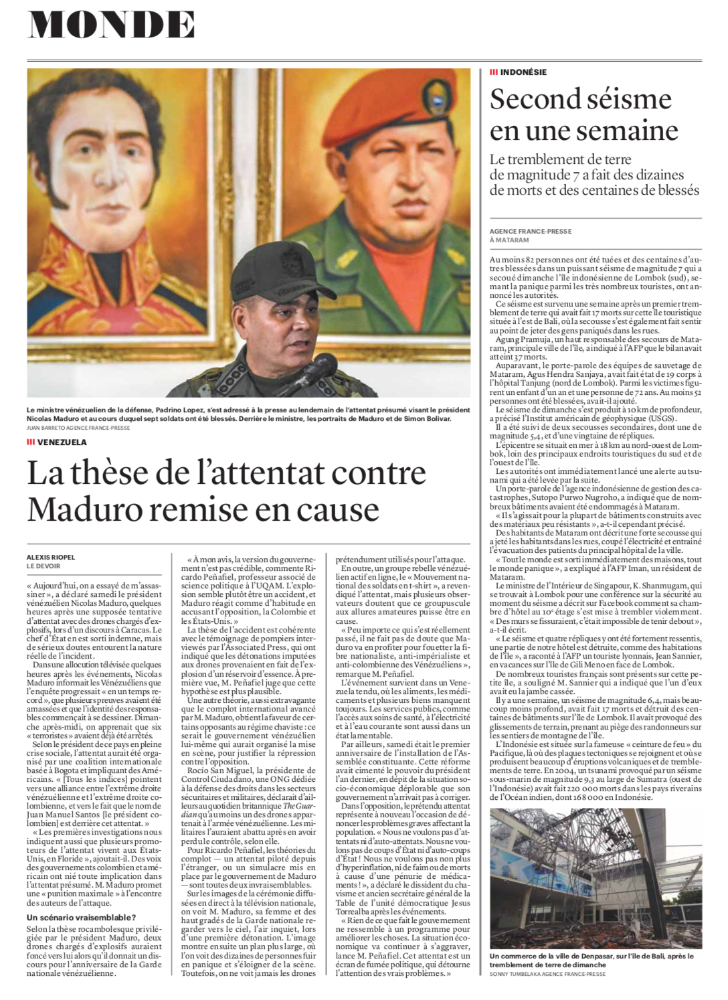

Alexis Riopel
riopelalexis [arobas] gmail.com
Mémoire de maîtrise
Curriculum vitæ
Portfolio
Le Devoir
Le Monde
La Presse
Radio-Canada
Québec Science
Autres
Photos
Portraits
Pérou, Bolivie et Chili
Nouvelle-Zélande
Le Devoir — 1er octobre 2018
Le Devoir — 16 juillet 2018

Le Devoir — 6 août 2018
Le Devoir — 10 août 2018
Le Devoir — 13 août 2018